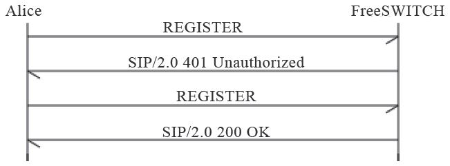

7.2 SIP注册
普通的固定电话网中电话的地址都是固定的，而因特网是开放的。Alice可能在家也可能在学校，甚至可能在世界上任何角落，只要能上网，她就能与全世界通信。当然，如果她作为被叫的一方，为了让我们的FreeSWITCH服务器能随时找到她，她的UA必须向我们的服务器注册 。
通常的注册流程是，Alice向FreeSWITCH发起注册（REGISTER）请求，FreeSWITCH返回401消息对Alice发起Challenge（挑战），Alice将自己的用户名密码信息与收到的Challenge信息进行计算，并将计算结果以加密的形式附加到下一个REGISTER请求上，重新发起注册，FreeSWITCH收到后对本地数据库中保存的Alice的信息使用同样的算法进行计算和加密，并将其与Alice发过来的计算结果相比较。如果计算结果相匹配，则认证通过，Alice便可以正常注册。交互流程如图7-4所示。

图7-4 SIP注册流程
下面我们用真正的注册流程进行说明。下面的SIP消息是在真正的FreeSWITCH中跟踪（trace）出来的。其中FreeSWITCH服务器的IP地址是192.168.4.4，它使用默认的端口号5060，在这里我们使用的SIP承载方式是UDP。Alice使用的UA是Zoiper，端口号是5090（在笔者写作时它与FreeSWITCH在同一台机器上，所以不能再使用端口5060）。其中，每个消息短横线之间的内容都是FreeSWITCH中输出的调试信息，不是SIP的一部分。recv（Receive的缩写形式）表示FreeSWITCH收到的消息，send表示发出的消息，下同。
在Alice发起注册时，下面是FreeSWITCH收到的第一条消息（为了便于说明，在排版时增加了行号）：
------------------------------------------------------------------------
recv 584 bytes from udp/[192.168.4.4]:5090 at 12:30:57.916812:
------------------------------------------------------------------------
01 REGISTER sip:192.168.4.4;transport=UDP SIP/2.0
02 Via: SIP/2.0/UDP 192.168.4.4:5090;branch=z9hG4bK-d8754z-d9ed3bbae47e568b-1---d8754z-;rport
03 Max-Forwards: 70
04 Contact: <sip:Alice@192.168.4.4:5090;rinstance=d42207a765c0626b;transport=UDP>
05 To: <sip:Alice@192.168.4.4;transport=UDP>
06 From: <sip:Alice@192.168.4.4;transport=UDP>;tag=9c709222
07 Call-ID: NmFjNzA3MWY1MDI3NGViMjY1N2QwZDlmZWQ5ZGY2OGE.
08 CSeq: 1 REGISTER
09 Expires: 3600
10 Allow: INVITE, ACK, CANCEL, BYE, NOTIFY, REFER, MESSAGE, OPTIONS, INFO, SUBSCRIBE
11 User-Agent: Zoiper rev.5415
12 Allow-Events: presence
13 Content-Length: 0
我们前面已经说过，SIP是类似HTTP的纯文本的协议，所以很容易阅读。其中：
·第1行的REGISTER表示这是一条注册消息。
·第2行的Via是SIP的消息路由，如果SIP经过好多代理服务器转发，则会有多条Via记录。
·第3行，Max-forwards指出消息最多可以经过多少次转发，主要是为了防止产生死循环。
·第4行，Contact是Alice的联系地址，即相当于Alice家的地址，本例中FreeSWITCH应该能在192.168.4.4这台机器上的5090端口找到她。
·第5和第6行的To和From表示以Alice注册。
·第7行，Call-ID是本次SIP会话（Session）的标志。
·第8行，CSeq是一个序号，由于UDP是不可靠的协议，在不可靠的网络上可能丢包，所以有些包需要重发，该序号则可以防止重发引起的消息重复。
·第9行，Expires是说明本次注册的有效期，单位是秒。在本例中，Alice的注册信息会在一小时后失效，它应该在半小时内再次向FreeSWITCH注册，以免FreeSWITCH“忘记”她。实际上，大部分UA的实现都会在几十秒内重新发一次注册请求，这在NAT的网络中有助于保持连接。
·第10行，Allow是说明Alice的UA所能支持的功能，某些UA功能丰富，而某些UA仅有有限的功能。
·第11行，User-Agent是UA的型号。
·第12行，Allow-Events说明她允许哪些事件通知。
·第13行，Content-Length是消息正文（Body）的长度，在这里只有消息头（Header），没有消息正文，因此长度为0。
FreeSWITCH需要验证Alice的身份才允许她注册。在SIP中，没有发明新的认证方式，而是使用已有的HTTP摘要 [1] （Digest）方式来认证。这里它给Alice回送（发，send）401响应消息，消息内容如下：
------------------------------------------------------------------------
send 664 bytes to udp/[192.168.4.4]:5090 at 12:30:57.919364:
------------------------------------------------------------------------
SIP/2.0 401 Unauthorized
Via: SIP/2.0/UDP 192.168.4.4:5090;branch=z9hG4bK-d8754z-d9ed3bbae47e568b-1---d8754z-;rport=5090
From: <sip:Alice@192.168.4.4;transport=UDP>;tag=9c709222
To: <sip:Alice@192.168.4.4;transport=UDP>;tag=QFXyg6gcByvUH
Call-ID: NmFjNzA3MWY1MDI3NGViMjY1N2QwZDlmZWQ5ZGY2OGE.
CSeq: 1 REGISTER
User-Agent: FreeSWITCH-mod_sofia/1.0.trunk-16981M
Allow: INVITE, ACK, BYE, CANCEL, OPTIONS, MESSAGE, UPDATE, INFO, REGISTER, REFER,
NOTIFY, PUBLISH, SUBSCRIBE
Supported: timer, precondition, path, replaces
WWW-Authenticate: Digest realm="192.168.4.4",
nonce="62fb812c-71d2-4a36-93d6-e0008e6a63ee",
algorithm=MD5, qop="auth"
Content-Length: 0
401消息表示未认证，它是FreeSWITCH对Alice请求的响应。各消息头的含义基本上与请求中的含义是一样的。其中，“CSeq:1 REGISTER”表示它是针对刚刚收到的CSeq为1的REGISTER请求的响应。同时，它在本端生成一个认证摘要（WWW-Authenticate），一起发送给Alice。
Alice收到带有摘要的401后，重新发起注册请求，这一次加上了根据收到的摘要和她自己的用户名密码生成的认证信息（Authorization头）。同时，下面你可能也会注意到，CSeq序号变成了2。下面是重发的注册请求信息：
------------------------------------------------------------------------
recv 846 bytes from udp/[192.168.4.4]:5090 at 12:30:57.921011:
------------------------------------------------------------------------
REGISTER sip:192.168.4.4;transport=UDP SIP/2.0
Via: SIP/2.0/UDP 192.168.4.4:5090;branch=z9hG4bK-d8754z-dae1693be9f8c10d-1---d8754z-;rport
Max-Forwards: 70
Contact: <sip:Alice@192.168.4.4:5090;rinstance=d42207a765c0626b;transport=UDP>
To: <sip:Alice@192.168.4.4;transport=UDP>
From: <sip:Alice@192.168.4.4;transport=UDP>;tag=9c709222
Call-ID: NmFjNzA3MWY1MDI3NGViMjY1N2QwZDlmZWQ5ZGY2OGE.
CSeq: 2 REGISTER
Expires: 3600
Allow: INVITE, ACK, CANCEL, BYE, NOTIFY, REFER, MESSAGE, OPTIONS, INFO, SUBSCRIBE
User-Agent: Zoiper rev.5415
Authorization: Digest username="Alice",realm="192.168.4.4",
nonce="62fb812c-71d2-4a36-93d6-e0008e6a63ee",
uri="sip:192.168.4.4;transport=UDP",
response="32b5ddaea8647a3becd25cb84346b1c3",
cnonce="b4c6ac7e57fc76b85df9440994e2ede8",
nc=00000001,qop=auth,algorithm=MD5
Allow-Events: presence
Content-Length: 0
FreeSWITCH收到带有认证的注册消息后，核实Alice身份，如果认证通过，则向Alice回应200 OK消息，表示注册成功了。返回的200 OK消息如下：
------------------------------------------------------------------------
send 665 bytes to udp/[192.168.4.4]:5090 at 12:30:57.936940:
------------------------------------------------------------------------
SIP/2.0 200 OK
Via: SIP/2.0/UDP 192.168.4.4:5090;branch=z9hG4bK-d8754z-dae1693be9f8c10d-1---d8754z-;rport=5090
From: <sip:Alice@192.168.4.4;transport=UDP>;tag=9c709222
To: <sip:Alice@192.168.4.4;transport=UDP>;tag=rrpQj11F86jeD
Call-ID: NmFjNzA3MWY1MDI3NGViMjY1N2QwZDlmZWQ5ZGY2OGE.
CSeq: 2 REGISTER
Contact: <sip:Alice@192.168.4.4:5090;rinstance=d42207a765c0626b;transport=UDP>; expires=3600
Date: Tue, 27 Apr 2010 12:30:57 GMT
User-Agent: FreeSWITCH-mod_sofia/1.0.trunk-16981M
Allow: INVITE, ACK, BYE, CANCEL, OPTIONS, MESSAGE, UPDATE, INFO, REGISTER, REFER,
NOTIFY, PUBLISH, SUBSCRIBE
Supported: timer, precondition, path, replaces
Content-Length: 0
如果认证失败（可能是Alice的密码填错了），则回应403 Forbidden或其他失败消息，消息内容如下：
------------------------------------------------------------------------
send 542 bytes to udp/[192.168.4.4]:5090 at 13:22:49.195554:
------------------------------------------------------------------------
SIP/2.0 403 Forbidden
Via: SIP/2.0/UDP 192.168.4.4:5090;branch=z9hG4bK-d8754z-d447f43b66912a1b-1---d8754z-;rport=5090
From: <sip:Alice@192.168.4.4;transport=UDP>;tag=c097e17f
To: <sip:Alice@192.168.4.4;transport=UDP>;tag=yeecX364pvryj
Call-ID: ZjkxMGJmMjE4Y2ZiNjU5MzM5NDZkMTE5NzMzMzM0Mjc.
CSeq: 2 REGISTER
User-Agent: FreeSWITCH-mod_sofia/1.0.trunk-16981M
Allow: INVITE, ACK, BYE, CANCEL, OPTIONS, MESSAGE, UPDATE, INFO, REGISTER, REFER,
NOTIFY, PUBLISH, SUBSCRIBE
Supported: timer, precondition, path, replaces
Content-Length: 0
可以看到，在整个注册过程中，Alice的密码是不会直接在SIP消息中传送的，因而最大限度地保证了认证过程的安全。
如果Alice注册成功，则FreeSWITCH会将Alice在SIP消息中的联系地址（Contact字段）记录下来。以后如果有人呼叫Alice，FreeSWITCH就可以向该联系地址发送SIP消息以建立呼叫。
[1] 参见：http://zh.wikipedia.org/wiki/HTTP摘要认证。